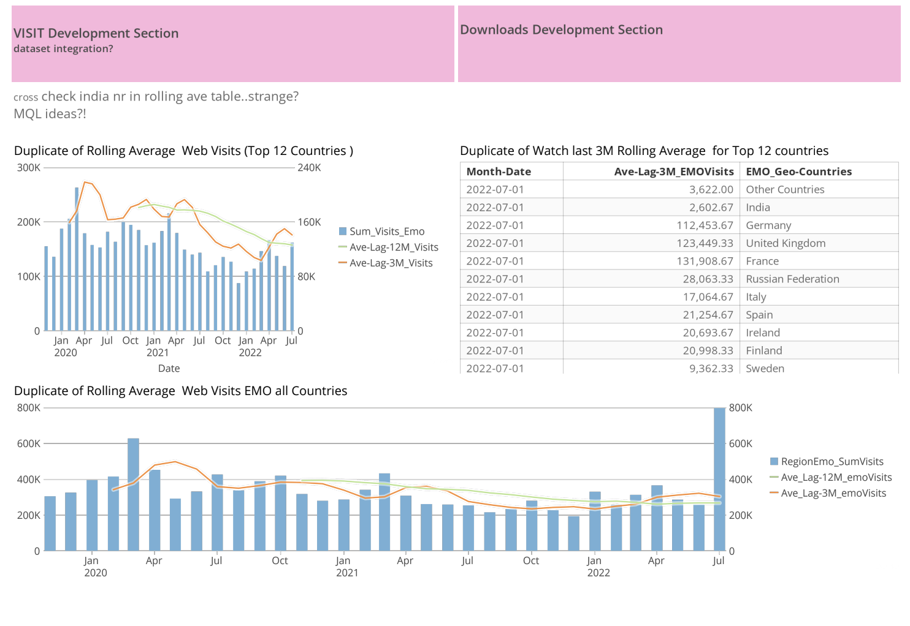

I explored why Marketing Qualified Leads (MQLs) didn’t convert to Sales Qualified Leads (SQLs). This included analyzing content engagement, persona fit, timing, and routing efficiency.
We aimed to increase SQLs by 10% year-over-year. This included tracking both the absolute number and the percentage change over time to measure improvements in segmentation and messaging.
Rolling averages helped smooth monthly fluctuations and provided a clearer view of performance patterns. This allowed us to focus on meaningful shifts without being distracted by anomalies.
I analyzed visits by country, view counts, and interactions with content. This was crucial in understanding what regions were most engaged and how to tailor strategies accordingly.
